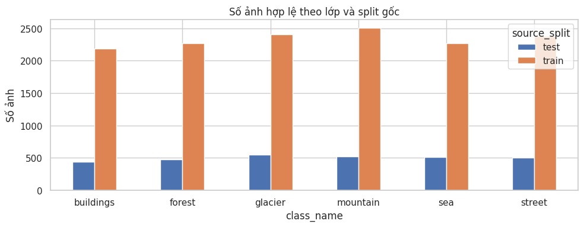
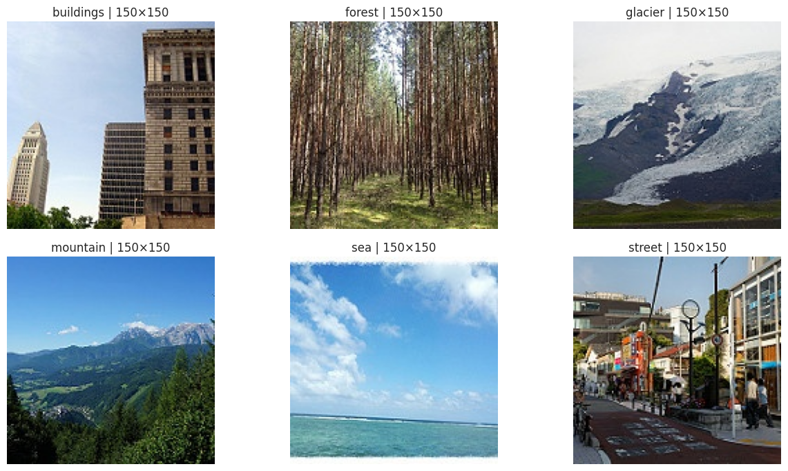
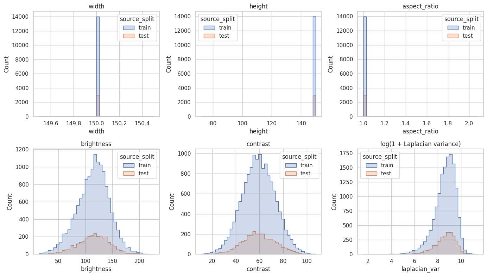
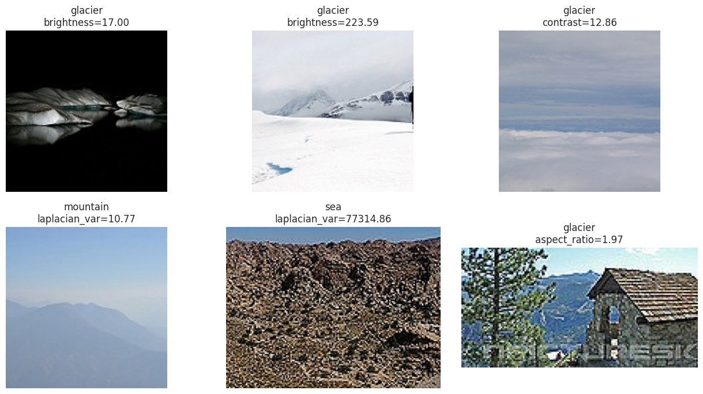
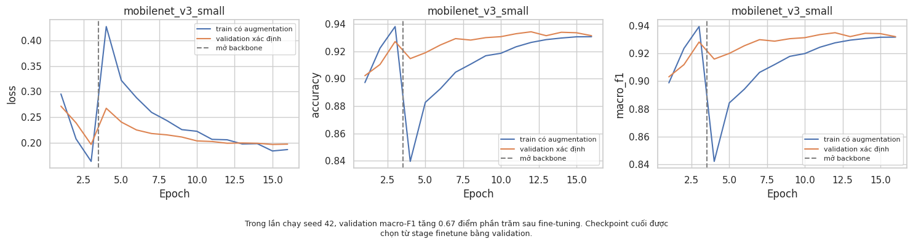
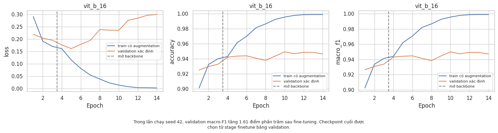
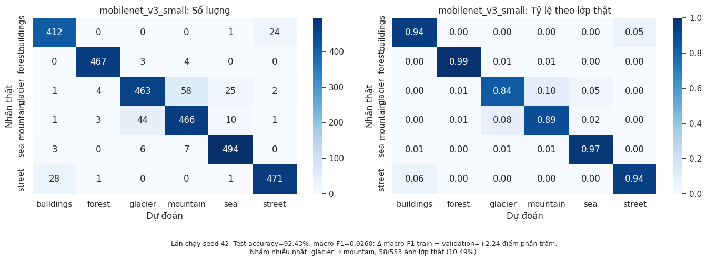
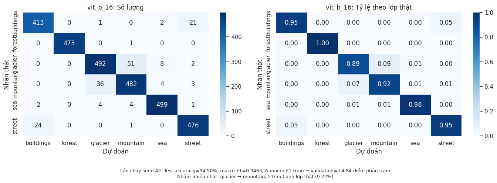
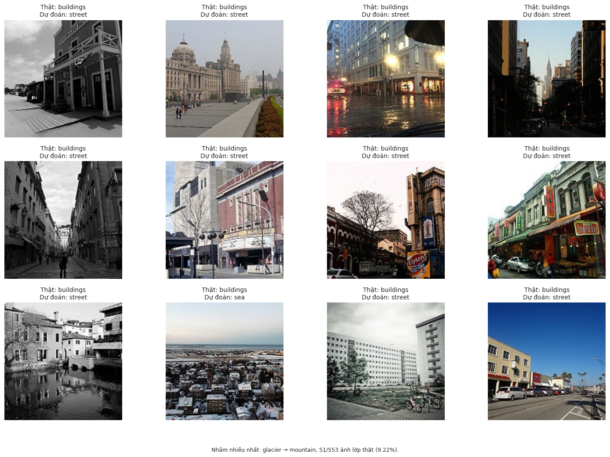

Tài liệu bài tập
Trang tổng hợp số liệu từ outputs notebook đã lưu. Đã có link notebook Colab và bản tải xuống bên dưới; PDF report riêng và video YouTube Public/Unlisted đang chờ bổ sung.
Notebook
Kết quả lấy từ outputs đã lưu; chưa kiểm chứng lại Run all trên Colab.
PDF report
Báo cáo riêng của bài tập lớn này
YouTube
Video Public hoặc Unlisted · khuyến nghị 5–10 phút
Mô tả tập dữ liệu
- Bài toán
- Phân loại cảnh ảnh RGB vào sáu lớp, học có giám sát.
- Tập dữ liệu / Nguồn
- Intel Image Classification · Kaggle ↗
- Ảnh có nhãn ban đầu
- 17,034 (14,034 train + 3,000 test)
- Ảnh sau làm sạch
- 17,006 (11,204 train + 2,802 validation + 3,000 test)
- Kích thước gốc trung vị
- 150×150 px · RGB
Sáu lớp gồm buildings, forest, glacier, mountain, sea và street. 7,301 ảnh trong seg_pred không có nhãn cho bài thực nghiệm này nên không được đưa vào train, validation hoặc test. Notebook dùng cấu trúc seg_train/seg_train và seg_test/seg_test khi các thư mục bị lồng.
150×150 là trung vị được ghi nhận, không phải khẳng định tất cả ảnh có cạnh ngắn ≥ 128 px. Resize lên 224×224 để phù hợp pretrained weights không tạo thêm chi tiết. Version Kaggle không xác định từ input của lần chạy; notebook lưu manifest để nhận diện dữ liệu.
Các hình được xuất nguyên bản từ notebook. Bấm vào hình để xem kích thước gốc; nhãn trong hình giữ nguyên ngôn ngữ của notebook.
Khám phá dữ liệu (EDA)
EDA giúp kiểm tra dữ liệu trước khi huấn luyện và giải thích các lựa chọn tiền xử lý. Các hình phân bố và ảnh mẫu dùng train/test gốc; bảng quyết định ghi rõ số liệu nào thuộc audit dữ liệu gốc và số liệu nào thuộc tập phát triển sau làm sạch (train + validation).


Hình dùng split gốc: 14,034 ảnh train và 3,000 ảnh test; mỗi lớp đều có dữ liệu. Bảng trong phần chuẩn bị dữ liệu ghi số lượng sau làm sạch và chia validation.
Cả sáu lớp đều có ảnh trong train và test gốc. Trong 14,006 ảnh phát triển sau làm sạch, mountain có nhiều ảnh nhất (2,504), buildings có ít nhất (2,187), tỷ lệ khoảng 1.14. Mức lệch này nhỏ nên lần chạy giữ cross-entropy thường; macro-F1 cho mỗi lớp trọng số ngang nhau khi tổng hợp kết quả.


Mỗi lớp có một ảnh train được chọn với seed 42. Dùng để hiểu nội dung nhãn và các bối cảnh có thể giống nhau như glacier/mountain hoặc buildings/street; sáu ảnh không đại diện cho toàn bộ độ đa dạng của dữ liệu.
Kích thước, màu và chất lượng ảnh
Audit ghi nhận toàn bộ 17,034 ảnh có nhãn đều đọc được và ở chế độ RGB. Trung vị kích thước là 150×150 px; đây không phải bằng chứng rằng mọi ảnh có cạnh ngắn ≥ 128 px. Đầu vào 224×224 phục vụ pretrained weights, còn chi tiết ảnh vẫn phụ thuộc độ phân giải gốc.
Notebook đo width/height và aspect ratio (rộng/cao). Trên ảnh grayscale 0–255, brightness là trung bình pixel, contrast là độ lệch chuẩn pixel. Variance of Laplacian mô tả mức biến thiên cạnh; biểu đồ dùng log(1 + variance) để dễ đọc dải giá trị rộng. Chỉ số thấp có thể xuất hiện ở cảnh biển ít texture, nên không tự kết luận ảnh bị mờ.


Histogram giúp quan sát dải kích thước, tỷ lệ khung hình và chất lượng ảnh ở hai split gốc. Test chỉ được audit để mô tả cấu trúc, chất lượng và kiểm tra rò rỉ; lựa chọn tiền xử lý và checkpoint dựa trên tập phát triển, không dựa trên kết quả test.


Ảnh được chọn theo cực trị thống kê, không phải mẫu ngẫu nhiên. Trên tập phát triển sau làm sạch có 137 ảnh brightness < 40 và 8 ảnh contrast std < 15; hai nhóm có thể giao nhau. Ngưỡng chỉ gợi ý xem ảnh, không phải quy tắc tự loại hoặc tự sửa ảnh.
Từ quan sát EDA đến quyết định xử lý
| Quan sát | Bằng chứng | Quyết định |
|---|---|---|
| Lệch lớp nhẹ | Tập phát triển sau làm sạch: max/min = 2,504/2,187 ≈ 1.14. | Dùng cross-entropy thường và báo macro-F1; không dùng class weighting hoặc sampler cân bằng. |
| Kích thước và màu ảnh | Trung vị 150×150; cả 17,034 ảnh audit là RGB. | Thống nhất cách đọc RGB, resize/crop về 224×224 và chuẩn hóa theo ImageNet để phù hợp pretrained weights. |
| Ảnh tối hoặc ít tương phản | Tập phát triển sau làm sạch: 137 ảnh brightness < 40; 8 ảnh contrast std < 15. | Giữ ảnh và kiểm tra bằng mắt. Lần chạy không áp dụng CLAHE; nếu thử bổ sung, chọn bằng validation. |
| Ảnh ít cạnh | Audit đo Laplacian variance và hiển thị ảnh ở cực trị; không dùng chỉ số này để xác nhận lỗi ảnh. | Không tự xóa ảnh ít texture hoặc tự áp dụng khử nhiễu. Cần xem nội dung ảnh trước khi đề xuất xử lý. |
| Trùng pixel hoặc nhãn mâu thuẫn | Cleaning log ghi 28 ảnh train bị loại. | Làm sạch trước khi chia validation; giữ test gốc. Hash chính xác chưa phát hiện ảnh gần trùng. |
Chuẩn bị dữ liệu
Pipeline giữ cùng dữ liệu đã làm sạch và cùng split cho hai mô hình. Làm sạch và chia tập diễn ra trước augmentation; ảnh gốc được đọc lại và biến đổi khi đưa vào mô hình.
Đọc ảnh, kiểm tra và làm sạch
- Giải mã toàn bộ ảnh bằng PIL để phát hiện lỗi đọc. Sửa hướng theo EXIF trước khi đo đặc tính hoặc tính hash, rồi chuyển RGB để có ba kênh thống nhất. Audit vẫn lưu chế độ màu gốc.
- Kiểm tra nhãn thuộc 0–5 tương ứng sáu lớp và ghi sample ID, kích thước, màu, độ sáng, tương phản, Laplacian variance. Cả 17,034 ảnh đều đọc được và có nhãn hợp lệ, nên không có ảnh bị loại vì lỗi decode hoặc nhãn không hợp lệ.
- Tính SHA-256 từ kích thước và pixel RGB sau sửa hướng, trước resize/crop. Cách này phát hiện ảnh cùng pixel dù tên file khác nhau; không dựa riêng vào tên hoặc hash của file nén.
- Giữ test hợp lệ nguyên trạng. Với train, ưu tiên loại ảnh trùng test, loại toàn bộ ảnh thuộc nhóm hash có nhãn mâu thuẫn, rồi giữ một ảnh trong mỗi nhóm trùng cùng nhãn. Log ghi 3 ảnh trùng test, 20 ảnh thuộc nhóm nhãn mâu thuẫn và 5 bản sao cùng nhãn bị loại: tổng 28 ảnh. Không tự gán lại nhãn.
Chia tập và kiểm tra rò rỉ
Train gốc còn 14,006 ảnh sau làm sạch (14,034 − 28). Dùng train_test_split với test_size=0.20, stratify theo nhãn và random_state=42 để tạo 11,204 ảnh train và 2,802 ảnh validation, giữ tỷ lệ sáu lớp gần với tập phát triển. Test gốc giữ 3,000 ảnh; tổng ba tập là 17,006.
Phân bố lớp sau làm sạch
| Lớp | Train | Validation | Test |
|---|---|---|---|
| buildings | 1,750 | 437 | 437 |
| forest | 1,815 | 454 | 474 |
| glacier | 1,918 | 480 | 553 |
| mountain | 2,003 | 501 | 525 |
| sea | 1,817 | 455 | 510 |
| street | 1,901 | 475 | 501 |
| Tổng | 11,204 | 2,802 | 3,000 |
Train dùng cập nhật trọng số. Validation dùng chọn checkpoint bằng macro-F1, early stopping và đánh giá các đề xuất tiền xử lý. Test chỉ dùng đo kết quả cuối sau khi đã cố định lựa chọn; audit test trước đó chỉ kiểm tra cấu trúc, chất lượng và trùng lặp.
Notebook kiểm tra mỗi split đủ sáu lớp, sample ID duy nhất và không có sample ID hoặc hash giao nhau giữa train, validation và test; không ghi nhận bản sao pixel nội bộ trong test. Manifest lưu ID, nhãn, hash và split để truy vết. Hash này chỉ bao phủ bản sao chính xác: ảnh gần trùng sau nén, resize hoặc crop có thể còn tồn tại.
Biến đổi ảnh theo mục đích
Hai mô hình dùng cùng augmentation train. Validation/test dùng weights.transforms() của IMAGENET1K_V1 tương ứng mỗi mô hình: cùng kích thước resize/crop và hằng số chuẩn hóa. Bảng trình bày các bước theo thứ tự áp dụng sau khi đọc RGB.
| Bước | Train (huấn luyện) | Validation / Test |
|---|---|---|
| Crop / resize | RandomResizedCrop về 224×224, scale=(0.8, 1.0), nội suy bilinear. Lấy crop với diện tích mục tiêu 80–100% ảnh rồi resize, tạo biến thể bố cục. | Resize cạnh ngắn về 256, rồi CenterCrop 224×224. Biến đổi xác định để đánh giá ổn định. |
| Lật ngang | RandomHorizontalFlip, p=0.5. Tạo biến thể trái/phải cho cùng lớp cảnh. | Không lật ngẫu nhiên. |
| Biến đổi màu | ColorJitter: brightness=0.15, contrast=0.15, saturation=0.10, hue=0.02. Tạo biến thể ánh sáng và màu nhẹ. | Không ColorJitter. |
| Tensor và chuẩn hóa | ToTensor đưa pixel từ 0–255 về 0–1, rồi Normalize theo ImageNet: mean=(0.485, 0.456, 0.406), std=(0.229, 0.224, 0.225). | Preset đổi sang tensor 0–1 và chuẩn hóa với cùng mean/std. Kết quả mỗi ảnh là tensor 3×224×224 như train. |
Normalize áp dụng (x − mean)/std cho từng kênh R, G, B sau bước đưa pixel về 0–1; tensor sau chuẩn hóa không còn bị giới hạn trong 0–1. Các hằng số lấy từ pretrained weights, không được fit lại trên validation/test. Đầu vào có 3 kênh, cao và rộng 224 px.
Augmentation chỉ tạo biến thể lúc huấn luyện, không làm tăng số ảnh gốc trong bảng split. Khi đánh giá checkpoint cuối trên train, notebook cũng dùng preprocessing xác định như validation/test để so khoảng cách train–validation. Crop có thể bỏ vùng cảnh quan quan trọng và upsample không thêm chi tiết; thay đổi recipe cần được kiểm tra bằng validation.
Phân tích và mô hình hóa
Hai mô hình Torchvision dùng pretrained weights IMAGENET1K_V1 và đầu ra sáu lớp. MobileNetV3-Small dùng backbone convolution; giai đoạn head học toàn bộ classifier. ViT-B/16 dùng patch 16×16: 196 patch và một class token, thay heads.head để dự đoán sáu lớp.
Recipe transfer learning hai giai đoạn
- Classifier: 3 epoch, khóa backbone và giữ backbone ở eval() để BatchNorm không cập nhật running statistics; learning rate classifier=1e-3.
- Fine-tuning: bắt đầu từ checkpoint head tốt nhất, mở toàn bộ backbone; tối đa 15 epoch, LR backbone=1e-5 và LR classifier=1e-4. Đây là fine-tuning toàn backbone với LR nhỏ, không phải chỉ mở vài tầng cuối.
Cấu hình: seed 42, batch size 16, gradient accumulation 2 bước (32 ảnh ở cửa sổ đầy), AdamW với weight decay=1e-4, cosine LR decay, gradient clipping norm=1 và AMP khi có CUDA. BatchNorm vẫn xử lý batch vật lý 16 ảnh.
Chọn checkpoint bằng validation macro-F1 cao nhất; nếu hai stage bằng nhau thì chọn head. Early stopping sau 4 epoch fine-tuning liên tiếp không cải thiện. MobileNet dừng ở epoch fine-tuning 13, chọn epoch 9; ViT dừng ở epoch 11, chọn epoch 7. Test chỉ được đánh giá sau khi chọn checkpoint.
Đối chiếu hai giai đoạn và kết quả test
| Mô hình | Head: validation macro-F1 | Fine-tuning: validation macro-F1 | Mức tăng (điểm phần trăm) | Epoch fine-tuning được chọn | Test accuracy | Test macro-F1 |
|---|---|---|---|---|---|---|
| MobileNetV3-Small | 0.9283 | 0.9350 | +0.67 | 9 | 92.43% | 0.9260 |
| ViT-B/16 | 0.9339 | 0.9500 | +1.61 | 7 | 94.50% | 0.9463 |
Mức tăng là chênh lệch validation macro-F1 × 100, tính theo điểm phần trăm. Các giá trị và epoch trong bảng lấy từ outputs đã lưu của lần chạy FULL trên CUDA, seed 42.


Validation macro-F1 tăng từ 0.9283 ở head lên 0.9350 ở fine-tuning (+0.67 điểm phần trăm). Checkpoint fine-tuning epoch 9 được chọn; train trong đường học có augmentation và dropout.


Validation macro-F1 tăng từ 0.9339 lên 0.9500 (+1.61 điểm phần trăm). Checkpoint fine-tuning epoch 7 được chọn. Đây là so sánh hai recipe có ngân sách epoch khác nhau.
F1 từng lớp trên cùng tập test
| Lớp | MobileNetV3-Small F1 | ViT-B/16 F1 | Số ảnh test |
|---|---|---|---|
| buildings | 0.9342 | 0.9429 | 437 |
| forest | 0.9842 | 0.9989 | 474 |
| glacier | 0.8662 | 0.9061 | 553 |
| mountain | 0.8792 | 0.9060 | 525 |
| sea | 0.9491 | 0.9756 | 510 |
| street | 0.9429 | 0.9482 | 501 |
Forest có F1 cao nhất ở cả hai mô hình (0.9842 và 0.9989); glacier/mountain là các lớp khó hơn. ViT có F1 cao hơn MobileNet ở cả sáu lớp trong lần chạy này.
Phân tích lỗi trên test
Confusion matrix có hàng là nhãn thật, cột là dự đoán. Hình gồm số lượng và tỷ lệ chuẩn hóa theo lớp thật; các tỷ lệ nhầm bên dưới dùng số ảnh của lớp thật làm mẫu số.


Test accuracy=92.43%, macro-F1=0.9260. Lỗi có hướng lớn nhất là glacier → mountain: 58/553 ảnh glacier (10.49%).


Test accuracy=94.50%, macro-F1=0.9463. Lỗi có hướng lớn nhất vẫn là glacier → mountain: 51/553 ảnh glacier (9.22%).


Hình lấy 12 lỗi đầu tiên theo thứ tự dự đoán, không phải mẫu ngẫu nhiên hoặc đại diện cho toàn bộ lỗi. Dùng để kiểm tra cảnh mơ hồ; không tự sửa nhãn chỉ vì mô hình dự đoán sai.
Tổng kết và mở rộng
Trong lần chạy FULL, seed 42, ViT-B/16 đạt test accuracy 94.50% và macro-F1 0.9463, cao hơn MobileNetV3-Small (92.43%, 0.9260) trên cùng 3,000 ảnh test. Fine-tuning recipe cải thiện validation macro-F1 ở cả hai mô hình; glacier → mountain vẫn là hướng nhầm lớn nhất.
Giới hạn của kết luận
- Chỉ có một seed. Khoảng cách macro-F1 train–validation được ghi nhận là +2.24 điểm phần trăm (MobileNet) và +4.84 (ViT), cần đọc cùng đường học và lỗi từng lớp; chưa đủ để khẳng định overfitting.
- Head học 3 epoch; fine-tuning có thêm tối đa 15 epoch, LR và chế độ backbone khác. Chưa thể quy toàn bộ mức tăng cho riêng việc mở backbone.
- Hash pixel chỉ loại bản sao chính xác. Crop có thể bỏ đường chân trời hoặc vùng cảnh quan quan trọng; upsample không thêm chi tiết. Các ảnh lỗi đầu tiên không đại diện cho phân phối toàn bộ lỗi.
Thí nghiệm mở rộng đề xuất
Chạy nhiều seed; thêm đối chứng tiếp tục khóa backbone với ngân sách học tương đương; thử crop/resize bằng validation; kiểm tra near-duplicate bằng perceptual hash hoặc group split và cố định version dữ liệu. Đây là đề xuất, chưa có kết quả thực hiện trong notebook đã cung cấp.